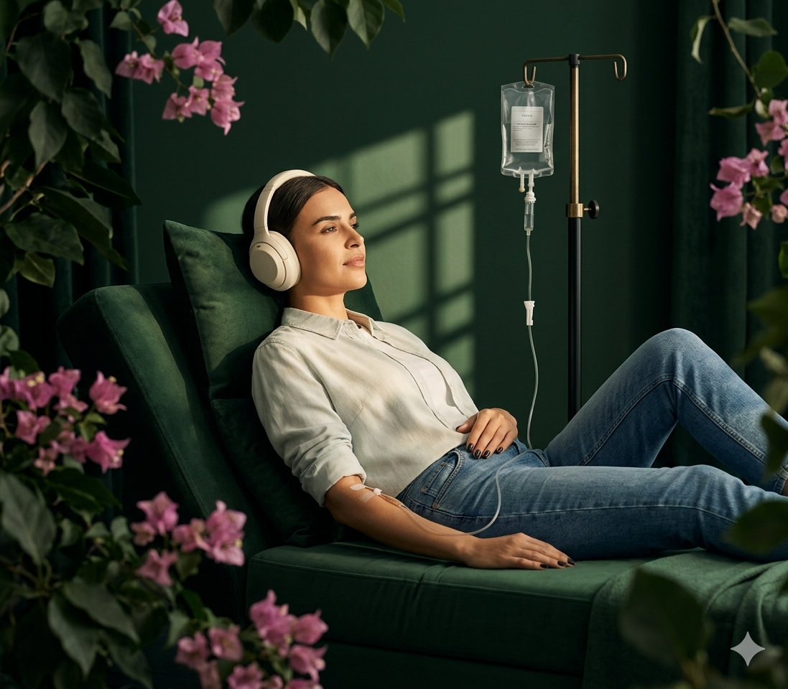

Audio experiences for med spas
Infuse with
Infuse with
intentional
sound.
Bougainvillea is a mindful audio experience to quiet negative thoughts, generate calm, and open you up to connection. Listen during your med spa drip for body and mind wellness.
See how it works ↓
The Bougainvillea Experience
A happier mind
A happier mind
starts just before
the drip.
Put on the Bougainvillea headphones and select your preferred sonic landscape. Each audio protocol matches the length of your infusion. Not spa music. Powerful audio experiences that guide you to a quieter mind.
A Bougainvillea Audio Journey
Pre-infusion readiness
Descent
Experience Awe
Incorporate Binaural Beats
Trigger Chills
Re-emerge
Why It Works
Woo woo.
Woo woo.
(Peer-reviewed.)

Where to Listen
Listen in during
Listen in during
your next
appointment.
Add Bougainvillea to enhance your mental health while you improve your physical health.
NAD+ Infusion
IV Vitamin Drip
HydraFacial
Botox & Filler
Microneedling
LED Therapy
Float Therapy
Infrared Sauna
Cryotherapy
Acupuncture
Bring It to Your Practice
Healthier bodies.
Healthier bodies.
Happier minds.
If you run an infusion clinic, med spa, or wellness practice, Bougainvillea is built for your treatment room. There's a whole tab for you.
For Practice Owners →